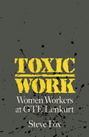

<body bgcolor="#FFFFFF" text="#000000" link="#0000FF" vlink="#CC0000" alink="#CC0000"><center><hr width="350" size="1" align="center" noshade>A compelling expos� of six years of legal and medical investigation into the lives of workers at GTE<hr width="350" size="1" align="center" noshade><p><a href="https://cdcshoppingcart.uchicago.edu/Cart/ChicagoBook.aspx?ISBN=9780877228165&&PRESS=temple" target="_top">Buy this book!</a> | <a href="https://cdcshoppingcart.uchicago.edu/Cart/Cart.aspx?PRESS=temple" target="_top">View Cart</a> | <a href="https://cdcshoppingcart.uchicago.edu/Cart/Cart.aspx?PRESS=temple" target="_top">Check Out</a></p><p></p></center><!--none//--><h1>Toxic Work</h1>
<H2>Women Workers at GTE Lenkurt</H2>
<h3>Steve Fox</h3>
<P>cloth 0-87722-816-7 $69.50, Nov 91, <FONT COLOR=#990033>Available</FONT>
<br>paper 0-87722-895-7 $28.95, Jun 92, <FONT COLOR=#990033>Available</FONT>
<BR> 192 pp
</P><BLOCKQUOTE><I>"[A]n expos� of the nature of chemical exposures in electronics, and of the 'archaic, random...set of institutions...that many injured workers must rely on for support, ...impossible to put down."</I>
<br>&#151<b><I>Women's Review of Books</I></b><I></I></BLOCKQUOTE>
<p>In 1971, when General Telephone and Electric relocated its GTE Lenkurt plant to Albuquerque, New Mexico, the city fathers were elated. GTE Lenkurt became the largest manufacturing employer in the state. The modern exterior of the plant and the "clean" reputation of the industry, however, effectively camouflaged conditions on the shop floor where unskilled assemblers, mostly minority women, used solder, epoxy, solvents, acids, plastics, and other toxic chemicals to assemble the solid state devices inside electronic components. The numerous deaths and virtual plague of physical disorders that resulted from these working conditions convinced attorney Josephine DeLeon Rohr to initiate the largest occupational disease and disablement trial in New Mexican history. In this compelling expos�, Steve Fox presents the sole public record of six years of legal and medical investigation into the lives of these workers. Their devastating testimony as well as the personal and professional risk incurred by Rohr documents the tragic legacy of the electronics industry.
<p>Rohr's meticulous investigation uncovered more than two hundred GTE workers (95% of them women, 70% of them Hispanic), each of whom had a strange array of health problems. The list included cancers, frequent miscarriages, excessive menstrual bleeding and hysterectomies, bizarre skin disorders, and odd neurological problems. Fox describes the dramatic events leading up to and the settlement of the case and shows how an ill wind can blow through the clean corridors of the high-tech workplace.
<BR>&nbsp;<h2>Reviews</h2>
<p><I>"A chilling story of what can happen when corporations like GTE put their profit margins ahead of human lives, and how the court system is often the only way victims can get relief."</I>
<br>&#151<b>Pamela Gilbert</b>, Legislative Director, Public Citizen's Congress Watch
<p><I>"A sensitive and gripping tale...Steve Fox successfully brings together issues of labor organizing, gender, work roles, minorities, and toxic hazards. This is a valuable contribution to the small but growing numbers of case studies of toxic wastes and collective action."</I>
<br>&#151<b>Professor Phil Brown</b>, Department of Sociology, Brown University
<BR>&nbsp;<h2>Contents</h2><P>
<p>Acknowledgments
<br>Introduction
<br>1. The First Plaintiff
<br>2. GTE's History in Albuquerque
<br>3. Health Complaints and the Deaths of Friends
<br>4. Federal Investigations, Riots, and Strikes
<br>5. Josephine Rohr Builds a Case Against GTE
<br>6. Medical Experts: Interpreting Facts
<br>7. Settlement: Deals for Verdicts
<br>8. Suing the Chemical Manufacturers: Dow, Du Pont, and Shell
<br>Conclusions
<br>Notes
<br>Selected Bibliography
<br>Index
</P><BR>&nbsp;<H2>About the Author(s)</H2>
<P><b>Steve Fox</b> teaches in the American Studies and Sociology departments at the University of New Mexico, Albuquerque.</P>
<BR><H2>Subject Categories</H2>
<p><A HREF="/tempress/health.html" TARGET="_top">Health and Health Policy</a>
<BR><A HREF="/tempress/sociology.html" TARGET="_top">Sociology</a>
</p>
<BR><h2 class="inpageheading">In the series</H2>
<P><I><a href="http://www.temple.edu/tempress/labor_change.html" onMouseOver="window.status='Click for other books in this series!'; return true;" onMouseOut="window.status=''; return true;" target="_top">Labor and Social Change</a></i>, edited by Paula Rayman and Carmen Sirianni.
</p><p><i>Labor and Social Change</i>, edited by Paula Rayman and Carmen Sirianni, includes books on workplace issues like worker participation, quality of work life, shorter hours, technological change, and productivity, as well as union and community organizing and ethnographies of particular occupations.</p>
<p align="center"><a href="https://cdcshoppingcart.uchicago.edu/Cart/ChicagoBook.aspx?ISBN=9780877228165&&PRESS=temple" target="_top">Buy this book!</a> | <a href="https://cdcshoppingcart.uchicago.edu/Cart/Cart.aspx?PRESS=temple" target="_top">View Cart</a> | <a href="https://cdcshoppingcart.uchicago.edu/Cart/Cart.aspx?PRESS=temple" target="_top">Check Out</a></p><p><font face="Arial" size="1"><a href="copyright.html" onMouseOver="window.status='Web Copyright Policy';return true;" onMouseOut="window.status=''" title="Web Copyright Policy">&copy;</a> 2015 <a href="http://www.temple.edu" target="new" onMouseOver="window.status='Link to Temple University home page';return true;" onMouseOut="window.status=''" title="Link to Temple University home page">Temple University</a>. All Rights Reserved. http://www.temple.edu/tempress/titles/769_reg.html</font></p>